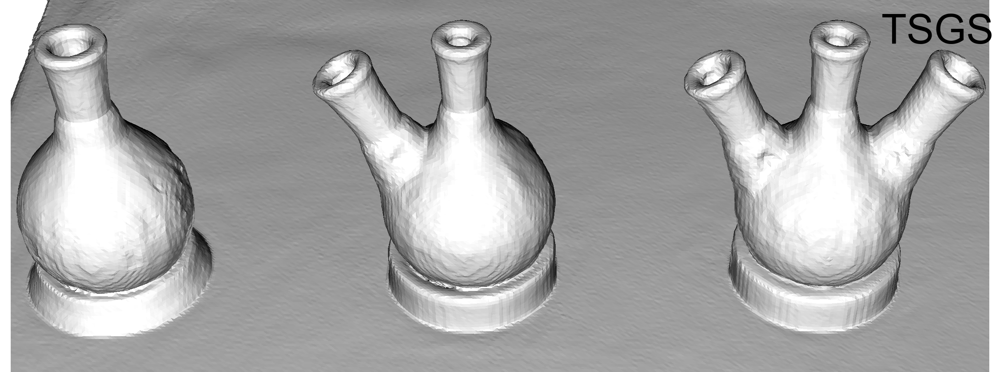
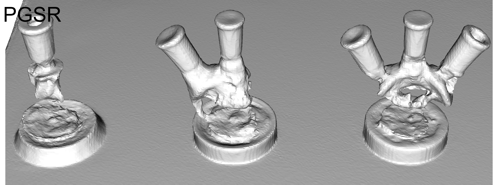

Reconstructing transparent surfaces is essential for tasks such as robotic manipulation in labs, yet it poses a significant challenge for 3D reconstruction techniques like 3D Gaussian Splatting (3DGS). These methods often encounter a transparency-depth dilemma, where the pursuit of photorealistic rendering through standard alpha-blending undermines geometric precision, resulting in considerable depth estimation errors for transparent materials. To address this issue, we introduce Transparent Surface Gaussian Splatting (TSGS), a new framework that separates geometry learning from appearance refinement. In the geometry learning stage, TSGS focuses on geometry by using specular-suppressed inputs to accurately represent surfaces. In the second stage, TSGS improves visual fidelity through anisotropic specular modeling, crucially maintaining the established opacity to ensure geometric accuracy. To enhance depth inference, TSGS employs a first-surface depth extraction method. This technique uses a sliding window over alpha-blending weights to pinpoint the most likely surface location and calculates a robust weighted average depth. To evaluate the transparent surface reconstruction task under realistic conditions, we collect a TransLab dataset that includes complex transparent laboratory glassware. Extensive experiments on TransLab show that TSGS achieves accurate geometric reconstruction and realistic rendering of transparent objects simultaneously within the efficient 3DGS framework. Specifically, TSGS significantly surpasses current leading methods, achieving a 37.3% reduction in chamfer distance and an 8.0% improvement in F1 score compared to the top baseline. Additionally, TSGS maintains high-quality novel view synthesis, evidenced by a 0.41dB gain in PSNR, demonstrating that TSGS overcomes the transparency-depth dilemma.
(a) The two-stage training process. In Stage 1, 3D Gaussians are optimized using geometric priors and de-lighted image inputs. In Stage 2, we fix the opacity parameters and optimize the 3DGS using GT images with specular highlights. (b) The inference process utilizes the trained model to extract the first-surface depth map, which is then used for mesh reconstruction. (c) Details of the first-surface depth extraction module, which employs a sliding window to find the maximum-weight window along the ray and computes depth via weighted averaging within this window.
@misc{li2025tsgs,
title={TSGS: Improving Gaussian Splatting for Transparent Surface Reconstruction via Normal and De-lighting Priors},
author={Mingwei Li and Pu Pang and Hehe Fan and Hua Huang and Yi Yang},
year={2025},
eprint={2504.12799},
archivePrefix={arXiv},
primaryClass={cs.CV},
url={https://arxiv.org/abs/2504.12799},
}